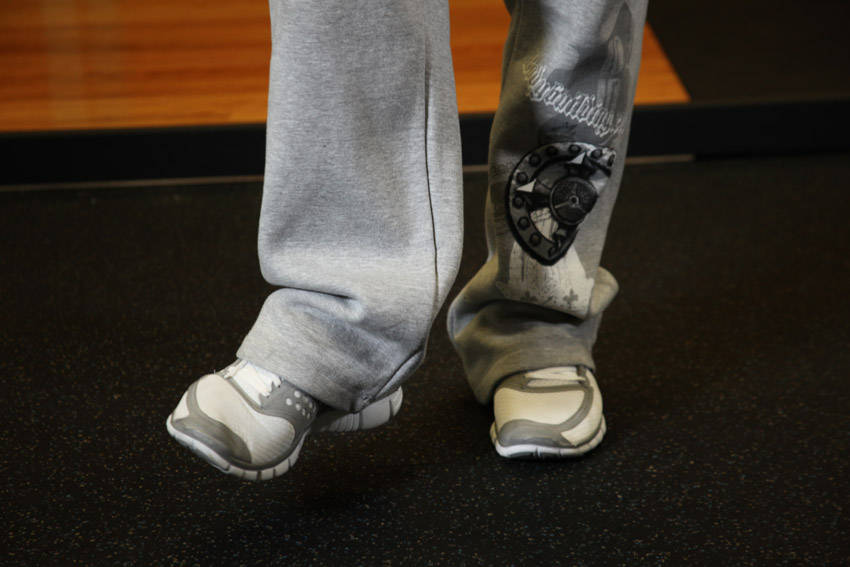

- Use a sturdy object like a squat rack to hold yourself.
- Lift the right leg in the air (just around 2 inches from the floor) and perform a circular motion with the big toe. Pretend that you are drawing a big circle with it. Tip: One circle equals 1 repetition. Breathe normally as you perform the movement.
- When you are done with the right foot, then repeat with the left leg.
This exercise appears in Programmd training programs. Take the quiz to find one for your gym.
Find your program